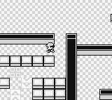
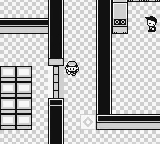

Team Rocket Storyline #



Beyond the gym battles and field moves, there are mandatory quests involving encounters with the antagonist group, Team Rocket. These events require defeating trainers, obtaining special items, and solving in-game puzzles. Thankfully, these quests must be accomplished in a linear order. For completeness, hare are all the tasks required to to complete the Rocket storyline:
- Defeat the rockets blocking the exit to Mt. Moon (post Brock).
- Defeat the rocket at the end of Nugget Bridge north of Cerulean City.
- Defeat the rocket at the exit of Cerulean City.
- Defeat the rocket guard in the Celadon City Casino.
- Press the poster switch the Celadon City Casino Rocket guard is guarding and enter the Rocket hideout.
- Solve the Rocket hideout maze puzzle on BF3 to get to BF4.
- Beat the Rocket grunt in BF4.
- Pick up the dropped elevator key from the BF4 Rocket Grunt.
- Solve the maze puzzle on BF2.
- Use the elevator key to enter the elevator on BF2.
- Go to BF4 using the elevator key.
- Beat Giovanni in Rocket Hideout.
- Pick up the Silph Scope Giovanni drops.
- Save Mr. Fuji at the top of Lavender Tower .
- Find the card key in Silph Co in Saffron City.
- Defeat Giovanni in Silph Co.
It’s a lot of tasks. Unlike the gym leaders, the difficulty of the Team Rocket puzzles are highly variable, but brute-forceable. From these quests, I concluded the agent needed a desire to either explore the whole world or spend extra time building a policy capable of reading and interpreting text. I decided to focus on the former.